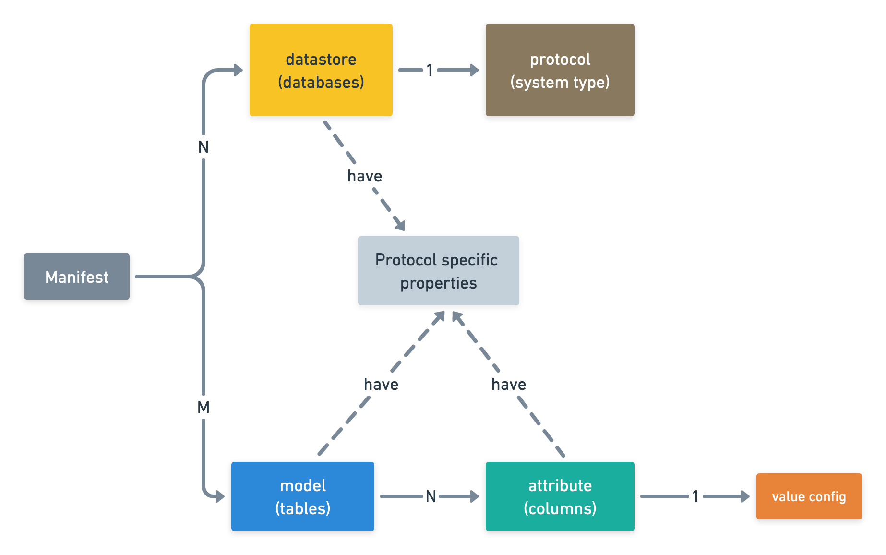

Dore Manifest
Overview
To generate data for any schema with Dore, we need to create a Dore Manifest, which is a JSON config that contains specification of the target data.
Here's a little mind map that tries to visually represent the manifest schema. It might be helpful to refer to this mind map while reading over the following sections.

A manifest can have multiple datastores (think of them as databases) and models (think of them as tables) defined. Each model in turn has a set of attributes (think of them as columns) associated with it. These three entities form the crux of the manifest.
The protocol of a datastore determines the type of system the datastore represents. For example, "mysql", "mongodb"
, etc. are all protocols.
The value config on an attribute is used to configure how Dore should generate values for the attribute.
The three entities - datastores, models, and attributes - might have a set of protocol specific properties defined which tells Dore how these entities are or should be represented/persisted in the underlying system.
Fields
-
id(string) [required]Manifest path:
$.idEach manifest should specify an
idstring to identify the manifest. Although Dore doesn't use this ID, it has been kept as a required field as it helps in improving the readability of the manifest. -
datastores(object) [required]Manifest path:
$.datastoresYou can think of a datastore as a database in MySQL.
A single Dore manifest can have multiple datastores definitions.
Please refer Datastores for further details.
-
models(object) [required]Manifest path:
$.modelsYou can think of a model as table in MySQL.
A single dore manifest can have multiple models definitions.
Please refer Models for further details.